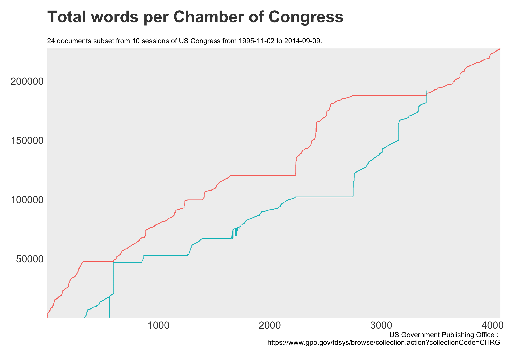
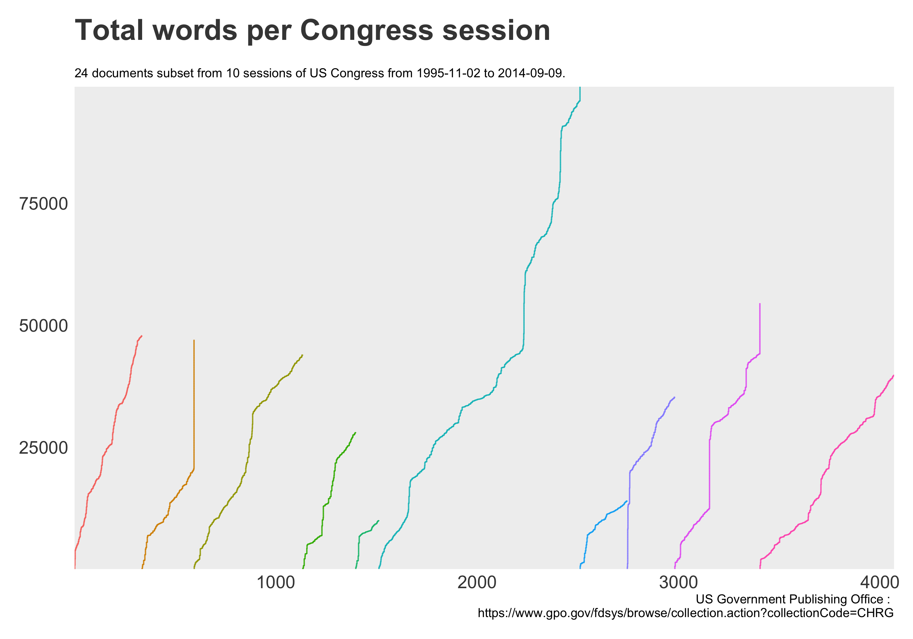
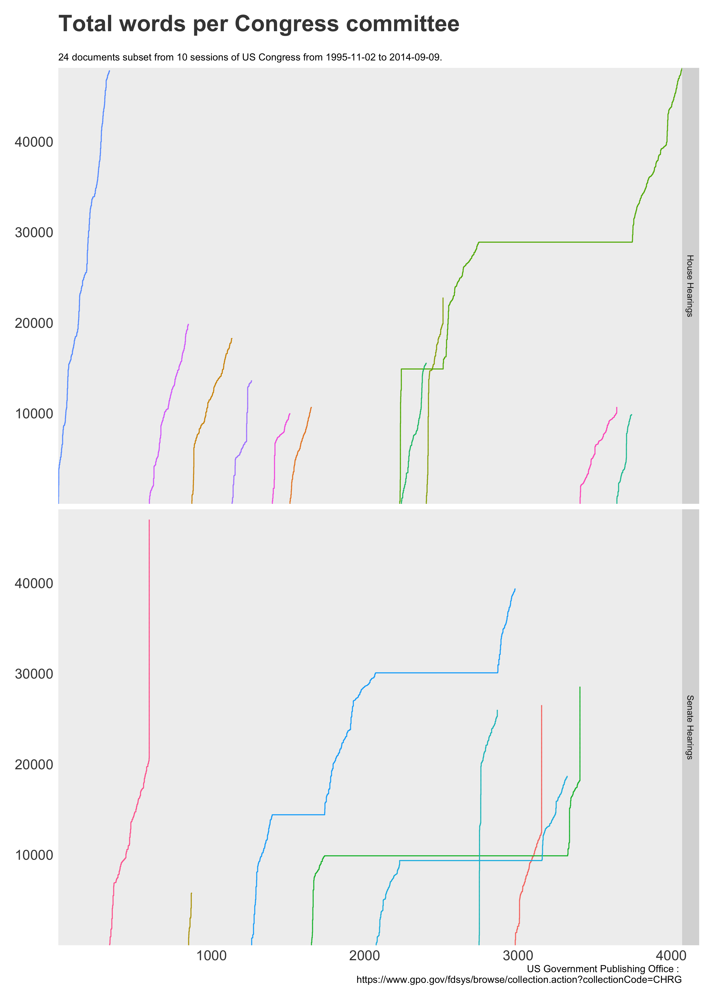
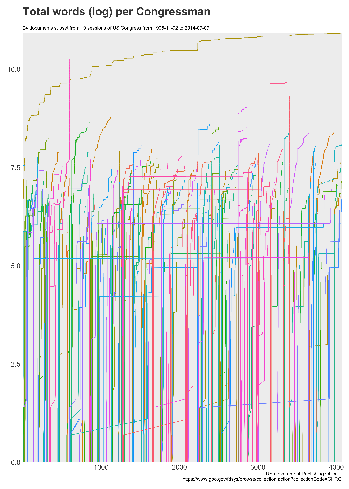
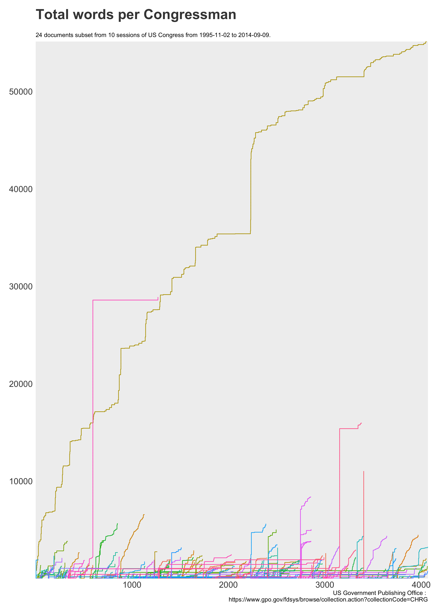

The project's idea originated when I noticed [laughter] in some congressional hearings documents. The idea of this project is to handle large-scale text processing via the following steps:
While the full scale model is currently being setup, some of the initial graphs are listed below. A sample of 24 documents was used resulting in a cleaned up 400k row data frame. Full set includes 25k documents and will constitute approximately half a billion rows.
Some general observations.
  More granular data - dealing with congressmen.
 And finally some laughter.